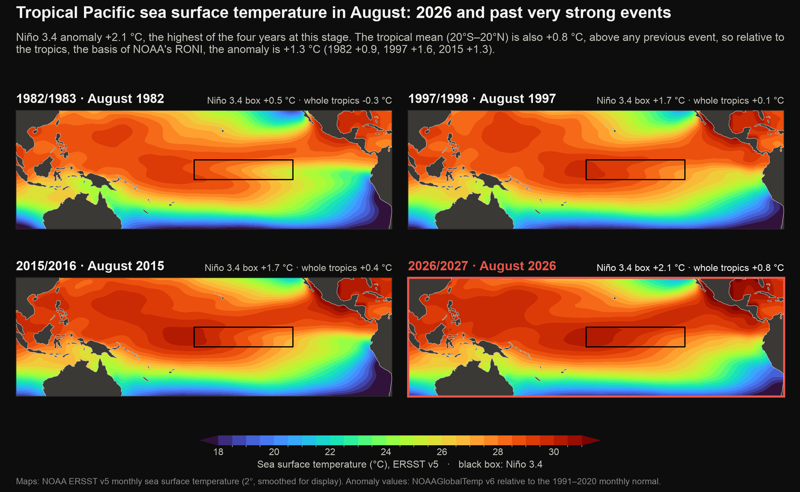
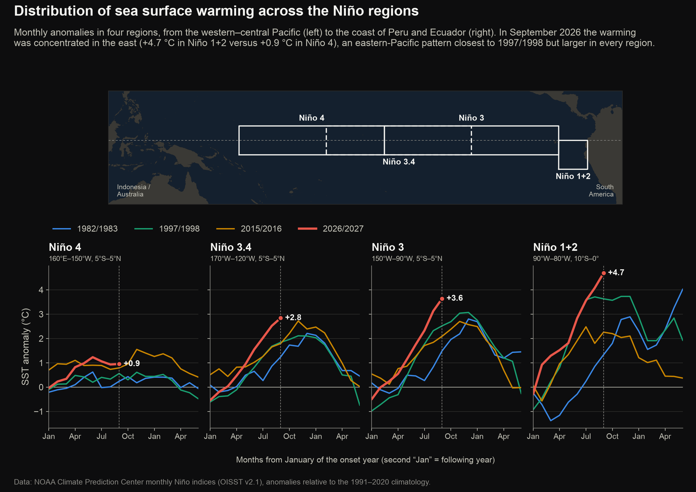
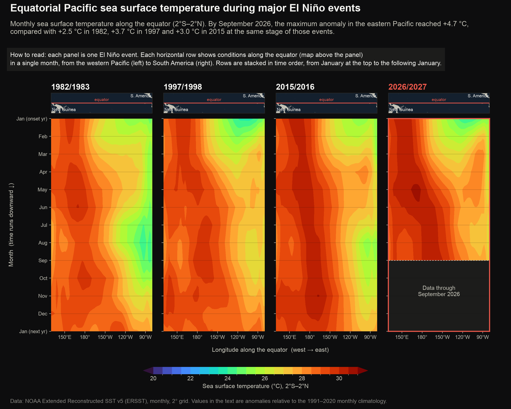
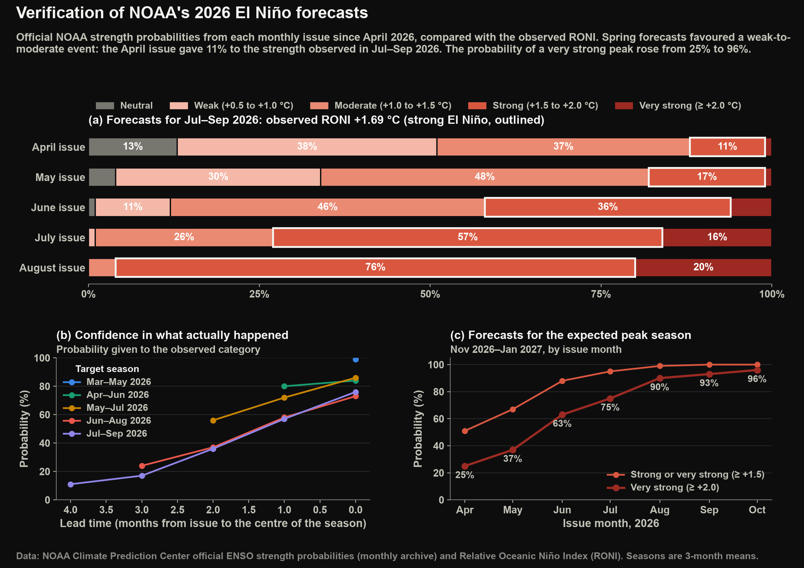

El Niño 2026/2027 · Detailed comparisons
Detailed comparisons with past very strong El Niños
Further comparisons of the 2026/2027 El Niño (A periodic warming of the central and eastern equatorial Pacific Ocean, with related changes in winds and rainfall, recurring every two to seven years.) with the very strong events of 2015, 1997 and 1982, and a record of how NOAA's forecasts for this event have performed.
At the same point in the year
The surface of the tropical Pacific in 2026/2027 and in the very strong El Niños of 2015/2016, 1997/1998 and 1982/1983.
In the same month, 2026/2027 is warmer than past very strong events both in the Niño 3.4 (A region of the central equatorial Pacific (5°S–5°N, 170°W–120°W) whose temperature is the main measure of El Niño.) region and across the tropical Pacific as a whole.

- What it shows
- Tropical Pacific sea surface temperature in the same month of each very strong El Niño year, with Niño 3.4 and tropical-mean anomalies (Differences from normal (the 1991–2020 average) for the same time of year.).
- How it relates to El Niño
- Comparing the same month of each very strong El Niño shows how far the warm water has spread in 2026/2027, and that the whole tropical ocean is warmer than in past events, which adds to El Niño's effect on global temperature.
- Data
- Maps: NOAA ERSST v5 monthly sea surface temperature (2°). Anomaly values: NOAAGlobalTemp v6, relative to 1991–2020.
- Get the data
- ERSST v5 (NOAA PSL) · NOAAGlobalTemp v6 (NOAA PSL)
Warming is strongest near South America and weakest in the western Pacific, a pattern closest to 1997/1998.

- What it shows
- Location of the four Niño regions and their monthly anomalies, showing where along the equator the warming is concentrated.
- How it relates to El Niño
- Where the warming is strongest matters: El Niños that peak near South America and those that peak in the central Pacific affect weather in different ways.
- Data
- NOAA CPC monthly Niño region indices (from OISST v2.1), anomalies from 1991–2020.
- Get the data
- Monthly Niño region indices (NOAA CPC)
How to read this figure
The map shows the four standard boxes along the equator, from Niño 4 (The western-central equatorial Pacific, 5°S–5°N, 160°E–150°W.) in the west to Niño 1+2 (The region off the coasts of Peru and Ecuador (10°S–0°, 90°W–80°W).) off South America. Each chart plots how much warmer than normal one box has been, month by month.
Surface warming in the eastern Pacific is stronger in 2026/2027 than at the same time in any past very strong event.

- What it shows
- Sea surface temperature along the equator, month by month (rows, top to bottom) and from the western Pacific to South America (left to right), for four very strong events.
- How it relates to El Niño
- Following the surface temperature month by month shows how El Niño spread east across the Pacific and how quickly the eastern Pacific warmed compared with past events.
- Data
- NOAA ERSST v5 monthly sea surface temperature (2°) along 2°S–2°N; anomalies from 1991–2020.
- Get the data
- ERSST v5 (NOAA PSL)
How to read this figure
Time runs down the page, one row per month; position runs left to right from the western Pacific to South America. Red marks warmer-than-normal water. Warmth that slants down and to the right is moving east over time.
How well were the forecasts doing?
NOAA's confidence in a very strong peak has risen with every forecast issued since April 2026.

- What it shows
- Each monthly NOAA strength forecast issued since April 2026 compared with the observed RONI (Relative Oceanic Niño Index, NOAA's official El Niño index: the Niño 3.4 anomaly measured relative to the average of the whole tropical ocean. Three-month averages.), and how confidence in a very strong peak has evolved.
- How it relates to El Niño
- Knowing how NOAA's forecasts for this event have performed shows how much confidence to place in the current outlook for its peak.
- Data
- NOAA CPC official ENSO strength probabilities (monthly archive since April 2026) and the observed Relative Oceanic Niño Index (RONI).
- Get the data
- El Niño strength probabilities (NOAA CPC) · Relative Oceanic Niño Index (NOAA CPC)